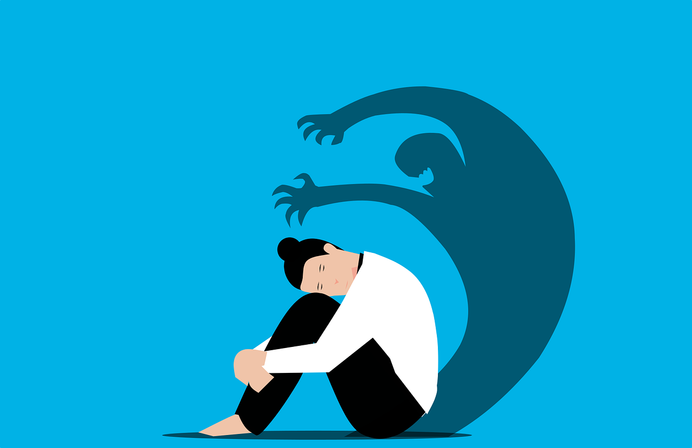

Around the world, people have different outlooks on mental health. It is common for mental health to not be taken as a serious matter. This creates a stigma around mental health, which makes it difficult for individuals to seek professional help. The purpose of this website is to raise awareness about the importance of easy access to mental health care and the dangers of stigma.
What is Mental Health Stigma?
Why does Mental Health Stigma exist?
